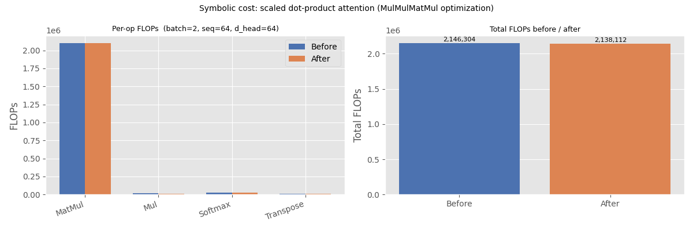

Note
Go to the end to download the full example code.
Symbolic Cost of a Model: Attention Block#
This example shows how to compute the symbolic FLOPs cost of an ONNX model
using BasicShapeBuilder
with inference=InferenceMode.COST.
The model used is a single-head scaled dot-product attention block, which contains two MatMul nodes (the core of the attention mechanism) plus auxiliary element-wise operations.
We also show how a simple pattern-based optimization can reduce the total
number of floating-point operations. Specifically, the
MulMulMatMulPattern fuses
Mul(Q, scale_q) ──┐
MatMul → Mul(MatMul(Q, Kᵀ), scale_q * scale_k)
Mul(Kᵀ, scale_k) ──┘
removing the two element-wise multiplications on the larger (batch, seq, d_head) tensors and replacing them with a single multiplication on the smaller (batch, seq, seq) score tensor.
import numpy as np
import onnx
import onnx.helper as oh
import onnx.numpy_helper as onh
from yobx.xbuilder import GraphBuilder, OptimizationOptions
from yobx.xshape import BasicShapeBuilder, InferenceMode
TFLOAT = onnx.TensorProto.FLOAT
1. Build the attention model#
The graph implements scaled dot-product attention:
where scale_q = 1 / sqrt(d_head) and scale_k = 1.0.
Both inputs to the attention MatMul are multiplied by a constant scalar,
which creates an opportunity for the MulMulMatMulPattern to fuse them.
Input dimensions are symbolic (batch, seq, d_head) so that the
cost expressions remain general.
scale_q = np.array([0.125], dtype=np.float32) # 1 / sqrt(64)
scale_k = np.array([1.0], dtype=np.float32)
model = oh.make_model(
oh.make_graph(
[
# Scale Q by a constant factor (1 / sqrt(d_head))
oh.make_node("Mul", ["Q", "scale_q"], ["Q_scaled"]),
# Transpose K: (batch, seq, d_head) → (batch, d_head, seq)
oh.make_node("Transpose", ["K"], ["K_T"], perm=[0, 2, 1]),
# Scale K_T by a second constant factor
oh.make_node("Mul", ["K_T", "scale_k"], ["K_T_scaled"]),
# Attention scores: (batch, seq, d_head) × (batch, d_head, seq) → (batch, seq, seq)
oh.make_node("MatMul", ["Q_scaled", "K_T_scaled"], ["scores"]),
# Softmax over the last axis
oh.make_node("Softmax", ["scores"], ["attn_weights"], axis=-1),
# Weighted sum of values: (batch, seq, seq) × (batch, seq, d_head)
oh.make_node("MatMul", ["attn_weights", "V"], ["output"]),
],
"sdp_attention",
[
oh.make_tensor_value_info("Q", TFLOAT, ["batch", "seq", "d_head"]),
oh.make_tensor_value_info("K", TFLOAT, ["batch", "seq", "d_head"]),
oh.make_tensor_value_info("V", TFLOAT, ["batch", "seq", "d_head"]),
],
[oh.make_tensor_value_info("output", TFLOAT, None)],
[onh.from_array(scale_q, name="scale_q"), onh.from_array(scale_k, name="scale_k")],
),
opset_imports=[oh.make_opsetid("", 18)],
ir_version=10,
)
print("Nodes in the original model:")
for node in model.graph.node:
print(f" {node.op_type:12s} inputs={list(node.input)} outputs={list(node.output)}")
Nodes in the original model:
Mul inputs=['Q', 'scale_q'] outputs=['Q_scaled']
Transpose inputs=['K'] outputs=['K_T']
Mul inputs=['K_T', 'scale_k'] outputs=['K_T_scaled']
MatMul inputs=['Q_scaled', 'K_T_scaled'] outputs=['scores']
Softmax inputs=['scores'] outputs=['attn_weights']
MatMul inputs=['attn_weights', 'V'] outputs=['output']
2. Compute the symbolic cost#
BasicShapeBuilder.run_model() with inference=InferenceMode.COST
walks every node and calls estimate_node_flops()
on each one. Because the model inputs have symbolic dimensions, the returned
FLOPs values are symbolic arithmetic expressions (strings such as
"2*batch*d_head*seq*seq").
Transpose costs 1 read + 1 write per element (input element count).
Truly zero-cost ops (Reshape, Identity, Cast, …) return 0.
builder_before = BasicShapeBuilder()
cost_before = builder_before.run_model(model, inference=InferenceMode.COST)
print("Symbolic FLOPs per node (before optimization):")
for op_type, flops, _ in cost_before:
if flops:
print(f" {op_type:12s} {flops}")
Symbolic FLOPs per node (before optimization):
Mul batch*d_head*seq
Transpose batch*d_head*seq
Mul batch*d_head*seq
MatMul 2*batch*d_head*seq*seq
Softmax 3*batch*seq*seq
MatMul 2*batch*d_head*seq*seq
3. Evaluate the symbolic FLOPs with concrete input shapes#
Once we have actual input tensors,
evaluate_cost_with_true_inputs()
substitutes the true dimension values into every symbolic expression and
returns concrete integer FLOPs.
batch, seq, d_head = 2, 64, 64
rng = np.random.default_rng(42)
feeds = {
"Q": rng.standard_normal((batch, seq, d_head)).astype(np.float32),
"K": rng.standard_normal((batch, seq, d_head)).astype(np.float32),
"V": rng.standard_normal((batch, seq, d_head)).astype(np.float32),
}
cost_concrete_before = builder_before.evaluate_cost_with_true_inputs(feeds, cost_before)
print("Concrete FLOPs per node (before optimization):")
total_before = 0
for op_type, flops, _ in cost_concrete_before:
total_before += flops or 0
if flops:
print(f" {op_type:12s} {flops:>10,}")
print(f" {'TOTAL':12s} {total_before:>10,}")
Concrete FLOPs per node (before optimization):
Mul 8,192
Transpose 8,192
Mul 8,192
MatMul 1,048,576
Softmax 24,576
MatMul 1,048,576
TOTAL 2,146,304
4. Apply the MulMulMatMulPattern optimization#
The MulMulMatMulPattern detects
a MatMul whose both inputs are the outputs of element-wise Mul
nodes with constant scalars. It fuses the three nodes into a single
MatMul followed by one Mul on the output tensor.
For our attention model this turns:
Mul(Q, scale_q)on a(batch, seq, d_head)tensor — removedMul(K_T, scale_k)on a(batch, d_head, seq)tensor — removedMatMul(Q_scaled, K_T_scaled)
into:
MatMul(Q, K_T)Mul(scores, scale_q * scale_k)on a(batch, seq, seq)tensor — new, smaller
gr = GraphBuilder(
model,
infer_shapes_options=True,
optimization_options=OptimizationOptions(patterns=["MulMulMatMul"], verbose=0),
)
opt_artifact = gr.to_onnx(optimize=True)
opt_model = opt_artifact.proto # ExportArtifact wraps a ModelProto
print("Nodes in the optimized model:")
for node in opt_model.graph.node:
print(f" {node.op_type:12s} inputs={list(node.input)} outputs={list(node.output)}")
Nodes in the optimized model:
Transpose inputs=['K'] outputs=['K_T']
MatMul inputs=['Q', 'K_T'] outputs=['MulMulMatMulPattern_scores']
Mul inputs=['MulMulMatMulPattern_scores', 'scale_q'] outputs=['scores']
Softmax inputs=['scores'] outputs=['attn_weights']
MatMul inputs=['attn_weights', 'V'] outputs=['output']
5. Compute the symbolic cost of the optimized model#
We run the same symbolic cost analysis on the optimized model.
builder_after = BasicShapeBuilder()
cost_after = builder_after.run_model(opt_model, inference=InferenceMode.COST)
print("Symbolic FLOPs per node (after optimization):")
for op_type, flops, _ in cost_after:
if flops:
print(f" {op_type:12s} {flops}")
Symbolic FLOPs per node (after optimization):
Transpose batch*d_head*seq
MatMul 2*batch*d_head*seq*seq
Mul batch*seq*seq
Softmax 3*batch*seq*seq
MatMul 2*batch*d_head*seq*seq
6. Evaluate the optimized model with concrete shapes#
The same feeds dictionary is used so that the results are directly comparable.
cost_concrete_after = builder_after.evaluate_cost_with_true_inputs(feeds, cost_after)
print("Concrete FLOPs per node (after optimization):")
total_after = 0
for op_type, flops, _ in cost_concrete_after:
total_after += flops or 0
if flops:
print(f" {op_type:12s} {flops:>10,}")
print(f" {'TOTAL':12s} {total_after:>10,}")
print(
f"\nFLOPs saved: {total_before - total_after:,} "
f"({(total_before - total_after) / total_before:.2%})"
)
Concrete FLOPs per node (after optimization):
Transpose 8,192
MatMul 1,048,576
Mul 8,192
Softmax 24,576
MatMul 1,048,576
TOTAL 2,138,112
FLOPs saved: 8,192 (0.38%)
7. Visualise the comparison#
The bar chart below groups operations by type and shows the FLOPs contribution before and after the optimization.
MatMul(andSoftmax) FLOPs are unchanged — only the surroundingMuloperations are affected.The two large
Mulnodes on (batch, seq, d_head) tensors are replaced by one smallerMulon the (batch, seq, seq) score tensor, savingbatch * seq * (2 * d_head − seq)FLOPs in total.
import matplotlib.pyplot as plt # noqa: E402
# Aggregate FLOPs by op type
def _aggregate(cost_list):
totals = {}
for op_type, flops, _ in cost_list:
totals[op_type] = totals.get(op_type, 0) + (flops or 0)
return totals
agg_before = _aggregate(cost_concrete_before)
agg_after = _aggregate(cost_concrete_after)
all_ops = sorted(op for op in set(agg_before) | set(agg_after))
vals_before = [agg_before.get(op, 0) for op in all_ops]
vals_after = [agg_after.get(op, 0) for op in all_ops]
x = np.arange(len(all_ops))
width = 0.35
fig, axes = plt.subplots(1, 2, figsize=(12, 4))
# Left: per-op FLOPs
ax = axes[0]
bars_b = ax.bar(x - width / 2, vals_before, width, label="Before", color="#4c72b0")
bars_a = ax.bar(x + width / 2, vals_after, width, label="After", color="#dd8452")
ax.set_xticks(x)
ax.set_xticklabels(all_ops, rotation=20, ha="right")
ax.set_ylabel("FLOPs")
ax.set_title(f"Per-op FLOPs (batch={batch}, seq={seq}, d_head={d_head})", fontsize=9)
ax.legend()
# Right: total FLOPs bar
ax2 = axes[1]
bars_total = ax2.bar(
["Before", "After"], [total_before, total_after], color=["#4c72b0", "#dd8452"]
)
ax2.set_ylabel("Total FLOPs")
ax2.set_title("Total FLOPs before / after", fontsize=9)
for bar, val in zip(bars_total, [total_before, total_after]):
ax2.text(
bar.get_x() + bar.get_width() / 2,
bar.get_height() * 1.005,
f"{val:,}",
ha="center",
va="bottom",
fontsize=8,
)
plt.suptitle(
"Symbolic cost: scaled dot-product attention (MulMulMatMul optimization)", fontsize=10
)
plt.tight_layout()
plt.show()

Total running time of the script: (0 minutes 0.241 seconds)
Related examples

Computation Cost: How It Works and Supported Operator Formulas